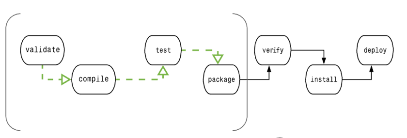

Maven ビルドライフサイクル
Maven のビルドライフサイクルは、プロジェクトのビルドとリリースのプロセスを定義し、3つの標準ライフサイクルを含みます：
- clean：プロジェクトをクリーンアップします
- default（または build）：コアとなるビルドプロセス
- site：プロジェクトのドキュメントを生成します

各ライフサイクルは複数のフェーズ（phase）で構成され、実行時には順番に実行されます。
1、clean ライフサイクル
clean ライフサイクルは、プロジェクトの一時ファイルとディレクトリ（主に target/）をクリーンアップする役割を担い、以下の主要なフェーズを含みます：
| フェーズ | 説明 | 自動的にバインドされるプラグインゴール |
|---|---|---|
pre-clean | クリーンアップ前の準備作業 | デフォルトのバインドなし |
clean | 削除target/ディレクトリ | maven-clean-plugin:clean |
post-clean | クリーンアップ後の後始末 | デフォルトのバインドなし |
よく使うコマンド：
mvn clean # 执行clean阶段（包含pre-clean和clean）
2、default ライフサイクル
default ライフサイクルは Maven の最も主要なライフサイクルであり、プロジェクトのビルドとデプロイのすべてのコアステップを含みます。
典型的な Maven ビルドライフサイクルは、以下のフェーズのシーケンスで構成されます：

| フェーズ | 処理 | 説明 |
|---|---|---|
| 検証 validate | プロジェクトを検証します | プロジェクトが正しく、必要な情報がすべて利用可能であることを検証します |
| コンパイル compile | コンパイルを実行します | ソースコードのコンパイルはこのフェーズで完了します |
| テスト Test | テスト | 適切な単体テストフレームワーク（例：JUnit）を使用してテストを実行します。 |
| パッケージ package | パッケージング | コンパイルされたコードを配布可能な形式（例：JAR や WAR）にパッケージングします |
| 検査 verify | 検査 | 統合テストの結果を検査して、品質が基準に達していることを保証します |
| インストール install | インストール | パッケージ化されたプロジェクトをローカルリポジトリにインストールして、他のプロジェクトが使用できるようにします |
| デプロイ deploy | デプロイ | 最終的なプロジェクトパッケージをリモートリポジトリにコピーして、他の開発者やプロジェクトと共有します |
default ライフサイクルを完了するために、これらのフェーズ（上に挙げていない他のライフサイクルフェーズを含む）は順番に実行されます。
フェーズの依存関係：
よく使うコマンド：
mvn compile # 编译主代码 mvn test # 运行测试 mvn package # 打包（生成target/*.jar） mvn install # 安装到本地仓库（~/.m2/repository） mvn deploy # 部署到远程仓库（需配置distributionManagement）
3、site ライフサイクル
site ライフサイクルは、プロジェクトサイトのドキュメントを生成するために使用されます：
| フェーズ | 説明 | 自動的にバインドされるプラグインゴール |
|---|---|---|
pre-site | サイト生成前の準備 | デフォルトのバインドなし |
site | プロジェクトサイトのドキュメントを生成 | maven-site-plugin:site |
post-site | サイト生成後の後始末 | デフォルトのバインドなし |
site-deploy | サイトをサーバーにデプロイ | maven-site-plugin:deploy |
よく使うコマンド：
mvn site # 生成站点（输出在target/site/） mvn site-deploy # 部署站点（需配置site URL）
ライフサイクルのまとめ
Maven には以下の3つの標準ライフサイクルがあります：
1、Clean ライフサイクル：
- clean：ターゲットディレクトリ内のコンパイル出力ファイルを削除します。これは通常、ビルド前に実行され、プロジェクトがクリーンな状態から開始されることを保証します。
2、Default ライフサイクル（Build ライフサイクルとも呼ばれます）：
- validate：プロジェクトの正確性を検証します。例えば、プロジェクトのバージョンが正しいかを確認します。
- compile：プロジェクトのソースコードをコンパイルします。
- test：プロジェクトの単体テストを実行します。
- package：コンパイルされたコードを配布可能な形式にパッケージングします。
- verify：品質を確保するためにプロジェクトに対して追加のチェックを行います。
- install：プロジェクトのビルド結果をローカル Maven リポジトリにインストールして、他のプロジェクトが使用できるようにします。
- deploy：プロジェクトのビルド結果をリモートリポジトリにコピーして、他の開発者やチームが使用できるようにします。
3、Site ライフサイクル：
- site：プロジェクトのドキュメントとサイト情報を生成します。
- deploy-site：生成されたサイト情報をリモートサーバーに公開して、プロジェクトのドキュメントを共有します。
ビルドフェーズはプラグインのゴールで構成される
プラグインのゴールは、特定のタスク（ビルドフェーズよりも細かい）を表し、プロジェクトのビルドと管理に役立ちます。これらのゴールは複数のフェーズにバインドされるか、またはバインドされない場合があります。どのビルドフェーズにもバインドされていないゴールは、ビルドライフサイクルの外で直接呼び出して実行できます。これらのゴールの実行順序は、呼び出すゴールとビルドフェーズの順序によって決まります。
例えば、次のコマンドを考えてみましょう：
clean と pakage はビルドフェーズであり、dependency:copy-dependencies はゴールです。
mvn clean dependency:copy-dependencies package
ここでは clean フェーズが最初に実行され、次に dependency:copy-dependencies ゴールが実行され、最後に package フェーズが実行されます。
1、Clean ライフサイクル
mvn post-clean コマンドを実行すると、Maven は clean ライフサイクルを呼び出します。これには以下のフェーズが含まれます：
- pre-clean：clean の前に完了する必要がある作業を実行します
- clean：前回のビルドで生成されたすべてのファイルを削除します
- post-clean：clean の直後に完了する必要がある作業を実行します
mvn clean の clean は上記の clean です。ライフサイクル内では、あるフェーズを実行すると、その前のすべてのフェーズも実行されます。つまり、mvn clean を実行すると、以下の2つのライフサイクルフェーズが実行されます：
pre-clean, clean
mvn post-clean を実行すると、以下の3つのライフサイクルフェーズが実行されます：
pre-clean, clean, post-clean
上記の clean ライフサイクルの任意のフェーズでゴールを定義することで、この部分の動作を変更できます。
次の例では、maven-antrun-plugin:run ゴールを pre-clean、clean、post-clean フェーズに追加します。これにより、clean ライフサイクルの各フェーズでテキスト情報を表示できます。
すでに C:\MVN\project ディレクトリに pom.xml ファイルを作成しています。
コマンドコンソールを開き、pom.xml があるディレクトリに移動して、次の mvn コマンドを実行します。
C:\MVN\project>mvn post-clean
Maven は処理を開始し、clean ライフサイクルのすべてのフェーズを表示します。
[INFO] Scanning for projects...
[INFO] ------------------------------------------------------------------
[INFO] Building Unnamed - com.companyname.projectgroup:project:jar:1.0
[INFO] task-segment: [post-clean]
[INFO] ------------------------------------------------------------------
[INFO] [antrun:run {execution: id.pre-clean}]
[INFO] Executing tasks
[echo] pre-clean phase
[INFO] Executed tasks
[INFO] [clean:clean {execution: default-clean}]
[INFO] [antrun:run {execution: id.clean}]
[INFO] Executing tasks
[echo] clean phase
[INFO] Executed tasks
[INFO] [antrun:run {execution: id.post-clean}]
[INFO] Executing tasks
[echo] post-clean phase
[INFO] Executed tasks
[INFO] ------------------------------------------------------------------
[INFO] BUILD SUCCESSFUL
[INFO] ------------------------------------------------------------------
[INFO] Total time: < 1 second
[INFO] Finished at: Sat Jul 07 13:38:59 IST 2012
[INFO] Final Memory: 4M/44M
[INFO] ------------------------------------------------------------------mvn clean コマンドを変更して、pre-clean と clean を表示し、post-clean フェーズでは何も実行しないように試すことができます。
2、Default (Build) ライフサイクル
これは Maven の主要なライフサイクルであり、アプリケーションのビルドに使用され、以下の23のフェーズを含みます：
| ライフサイクルフェーズ | 説明 |
|---|---|
| validate（検証） | プロジェクトが正しいかどうか、またビルドプロセスを完了するために必要な情報がすべて利用可能かどうかを検証します。 |
| 初期化 | ビルド状態を初期化します。例えば、属性値を設定します。 |
| generate-sources（ソースコードの生成） | コンパイルフェーズに含まれるソースコードを生成します。 |
| process-sources（ソースコードの処理） | ソースコードを処理します。例えば、任意の値をフィルタリングします。 |
| generate-resources（リソースファイルの生成） | プロジェクトのパッケージに含まれるリソースファイルを生成します。 |
| process-resources（リソースファイルの処理） | リソースをターゲットディレクトリにコピーして処理し、パッケージングフェーズの準備をします。 |
| compile（コンパイル） | プロジェクトのソースコードをコンパイルします。 |
| process-classes（クラスファイルの処理） | コンパイルで生成されたファイルを処理します。例えば、Java クラスファイルに対してバイトコードの改善や最適化を行います。 |
| generate-test-sources（テストソースコードの生成） | コンパイルフェーズに含まれるテストソースコードを生成します。 |
| process-test-sources（テストソースコードの処理） | テストソースコードを処理します。例えば、任意の値をフィルタリングします。 |
| generate-test-resources（テストリソースファイルの生成） | テスト用のリソースファイルを作成する。 |
| process-test-resources（テストリソースファイルの処理） | テストリソースをターゲットディレクトリにコピーして処理する。 |
| test-compile（テストソースのコンパイル） | テストソースコードをテストターゲットディレクトリにコンパイルする。 |
| process-test-classes（テストクラスファイルの処理） | テストソースのコンパイルで生成されたファイルを処理する。 |
| test（テスト） | 適切な単体テストフレームワークを使ってテストを実行する（JUnitはその1つである）。 |
| prepare-package（パッケージの準備） | 実際にパッケージ化する前に、パッケージ化の準備として必要な操作を実行する。 |
| package（パッケージ化） | コンパイルされたコードを、JAR、WAR、EARファイルなどの配布可能な形式のファイルにパッケージ化する。 |
| pre-integration-test（統合テスト前） | 統合テストを実行する前に必要なアクションを実行する。たとえば、必要な環境をセットアップする。 |
| integration-test（統合テスト） | 統合テストを実行できる環境にプロジェクトを処理およびデプロイする。 |
| post-integration-test（統合テスト後） | 統合テストの完了後に必要なアクションを実行する。たとえば、統合テスト環境をクリーンアップする。 |
| verify（検証） | プロジェクトパッケージが有効で品質基準を満たしていることを検証するために、任意のチェックを実行する。 |
| install（インストール） | プロジェクトパッケージをローカルリポジトリにインストールし、他のローカルプロジェクトの依存関係として使用できるようにする。 |
| deploy（デプロイ） | 最終的なプロジェクトパッケージをリモートリポジトリにコピーして、他の開発者やプロジェクトと共有する。 |
Maven ライフサイクルに関連するいくつかの重要な概念を説明する必要がある：
あるフェーズが Maven コマンド（例: mvn compile）で呼び出されると、そのフェーズより前のフェーズとそのフェーズ自身を含むすべてのフェーズが実行される。
異なる Maven ゴールは、パッケージの種類（JAR / WAR / EAR）に応じて、異なる Maven ライフサイクルフェーズにバインドされる。
次の例では、maven-antrun-plugin:run ゴールを Build ライフサイクルの一部のフェーズに追加します。これにより、ライフサイクルのテキスト情報を表示できます。
C:\MVN\project ディレクトリにある pom.xml ファイルを更新しました。
コマンドコンソールを開き、pom.xml があるディレクトリに移動して、以下の mvn コマンドを実行します。
C:\MVN\project>mvn compile
Maven は、compile フェーズまでのビルドライフサイクルの各フェーズを処理して表示します。
[INFO] Scanning for projects...
[INFO] ------------------------------------------------------------------
[INFO] Building Unnamed - com.companyname.projectgroup:project:jar:1.0
[INFO] task-segment: [compile]
[INFO] ------------------------------------------------------------------
[INFO] [antrun:run {execution: id.validate}]
[INFO] Executing tasks
[echo] validate phase
[INFO] Executed tasks
[INFO] [resources:resources {execution: default-resources}]
[WARNING] Using platform encoding (Cp1252 actually) to copy filtered resources,
i.e. build is platform dependent!
[INFO] skip non existing resourceDirectory C:\MVN\project\src\main\resources
[INFO] [compiler:compile {execution: default-compile}]
[INFO] Nothing to compile - all classes are up to date
[INFO] [antrun:run {execution: id.compile}]
[INFO] Executing tasks
[echo] compile phase
[INFO] Executed tasks
[INFO] ------------------------------------------------------------------
[INFO] BUILD SUCCESSFUL
[INFO] ------------------------------------------------------------------
[INFO] Total time: 2 seconds
[INFO] Finished at: Sat Jul 07 20:18:25 IST 2012
[INFO] Final Memory: 7M/64M
[INFO] ------------------------------------------------------------------
コマンドラインでの呼び出し
開発環境では、以下のコマンドを使用してプロジェクトをビルドし、ローカルリポジトリにインストールします。
mvn install
このコマンドは、install フェーズを実行する前に、default ライフサイクルのフェーズ（validate、compile、package など）を順番に実行します。ここでは install のように、最後のフェーズだけを呼び出せばよいのです。
ビルド環境では、以下のコマンドを使用して、クリーンビルドし、プロジェクトを共有リポジトリにデプロイします。
mvn clean deploy
このコマンドは、マルチモジュール（つまり複数のサブプロジェクトを含むプロジェクト）の場合にも使用できます。Maven は各サブプロジェクトで clean コマンドを実行し、その後 deploy コマンドを実行します。
3、Site ライフサイクル
Maven Site プラグインは通常、新しいレポートドキュメントの作成やサイトのデプロイなどに使用されます。
- pre-site: サイトドキュメントを生成する前に完了する必要がある作業を実行する。
- site: プロジェクトのサイトドキュメントを生成する。
- post-site: サイトドキュメントを生成した後に完了する必要がある作業を実行し、デプロイの準備をする。
- site-deploy: 生成されたサイトドキュメントを特定のサーバーにデプロイする。
ここでよく使われるのは site フェーズと site-deploy フェーズで、Maven サイトの生成と公開に使用します。これは Maven のかなり強力な機能で、マネージャーに好まれます。ドキュメントや統計データが自動生成され、非常に見栄えが良いです。 次の例では、maven-antrun-plugin:run ゴールを Site ライフサイクルのすべてのフェーズに追加します。これにより、ライフサイクルのすべてのテキスト情報を表示できます。
C:\MVN\project ディレクトリにある pom.xml ファイルを更新しました。
コマンドコンソールを開き、pom.xml があるディレクトリに移動して、以下の mvn コマンドを実行します。
C:\MVN\project>mvn site
Maven は、site フェーズまでの site ライフサイクルの各フェーズを処理して表示します。
[INFO] Scanning for projects...
[INFO] ------------------------------------------------------------------
[INFO] Building Unnamed - com.companyname.projectgroup:project:jar:1.0
[INFO] task-segment: [site]
[INFO] ------------------------------------------------------------------
[INFO] [antrun:run {execution: id.pre-site}]
[INFO] Executing tasks
[echo] pre-site phase
[INFO] Executed tasks
[INFO] [site:site {execution: default-site}]
[INFO] Generating "About" report.
[INFO] Generating "Issue Tracking" report.
[INFO] Generating "Project Team" report.
[INFO] Generating "Dependencies" report.
[INFO] Generating "Project Plugins" report.
[INFO] Generating "Continuous Integration" report.
[INFO] Generating "Source Repository" report.
[INFO] Generating "Project License" report.
[INFO] Generating "Mailing Lists" report.
[INFO] Generating "Plugin Management" report.
[INFO] Generating "Project Summary" report.
[INFO] [antrun:run {execution: id.site}]
[INFO] Executing tasks
[echo] site phase
[INFO] Executed tasks
[INFO] ------------------------------------------------------------------
[INFO] BUILD SUCCESSFUL
[INFO] ------------------------------------------------------------------
[INFO] Total time: 3 seconds
[INFO] Finished at: Sat Jul 07 15:25:10 IST 2012
[INFO] Final Memory: 24M/149M
[INFO] ------------------------------------------------------------------``` その他の拡張
クリックしてノートを共有
ノートは本記事の内容を拡張したものである必要があります！
記事の投稿は、ここをクリック
登録招待コードの取得方法
ノートを共有する前にログイン！
登録招待コードの取得方法